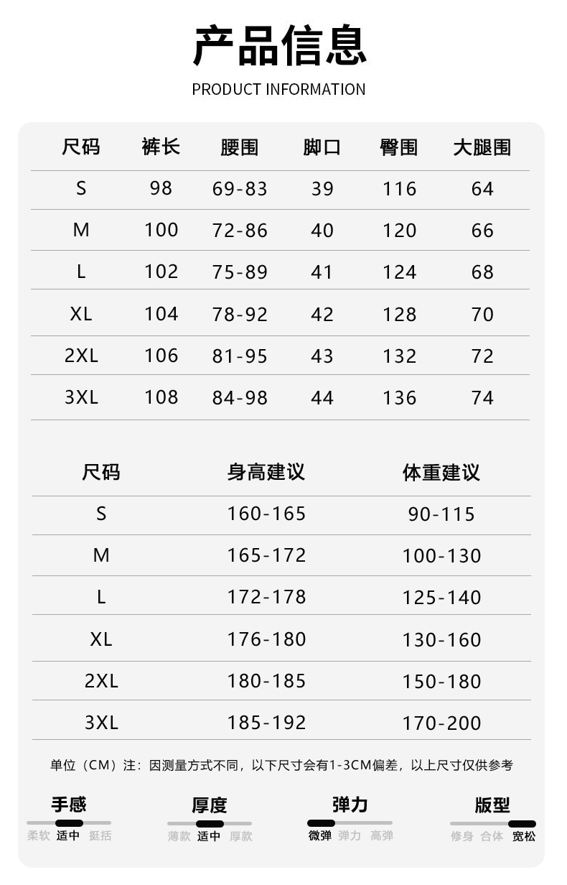
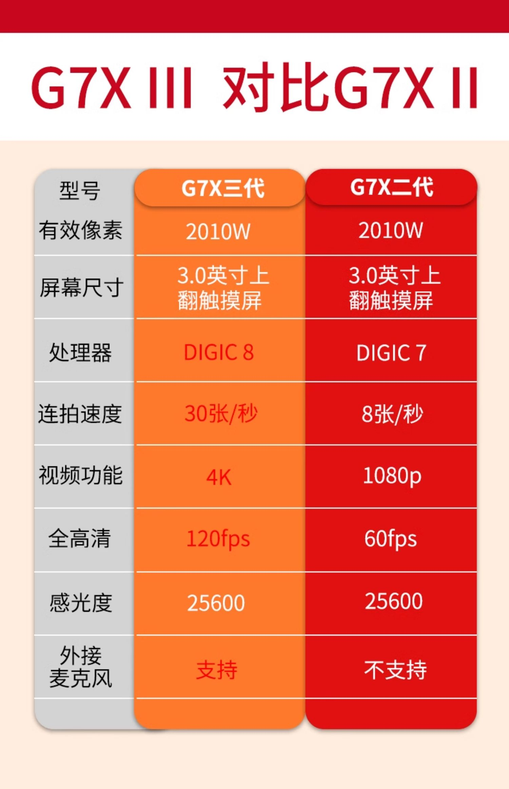
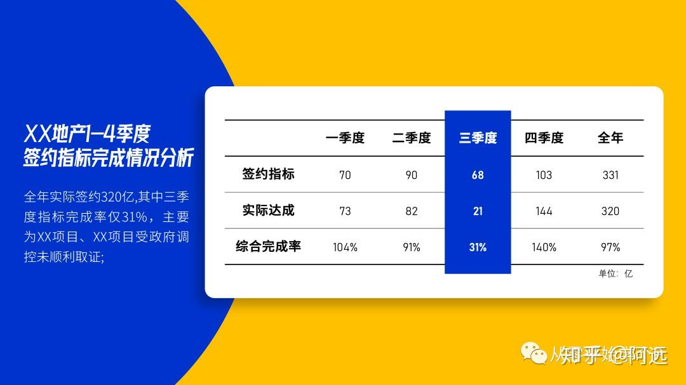
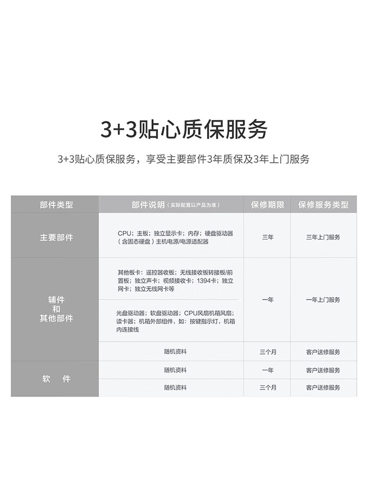

下面是第一个表格2,该表格有两个试听选项，分别代表两种阅读的方法：工具1型、工具2型

工具1型
表格，7行6列，裤子尺码表
表头：尺码, 裤长, 腰围, 脚口, 臀围, 大腿围，第一行
S:尺码，2行1列
98: 裤长，2行2列
69-83: 腰围，2行3列
39: 脚口，2行4列
116: 臀围，2行5列
64: 大腿围，2行6列
M:尺码，3行1列
100: 裤长，3行2列
72-86: 腰围，3行3列
40: 脚口，3行4列
120: 臀围，3行5列
66: 大腿围，3行6列
L:尺码，4行1列
102: 裤长，4行2列
75-89: 腰围，4行3列
41: 脚口，4行4列
124: 臀围，4行5列
68: 大腿围，4行6列
XL:尺码，5行1列
104: 裤长，5行2列
78-92: 腰围，5行3列
42: 脚口，5行4列
128: 臀围，5行5列
70: 大腿围，5行6列
2XL:尺码，6行1列
106: 裤长，6行2列
81-95: 腰围，6行3列
43: 脚口，6行4列
132: 臀围，6行5列
72: 大腿围，6行6列
3XL:尺码，7行1列
108: 裤长，7行2列
84-98: 腰围，7行3列
44: 脚口，7行4列
136: 臀围，7行5列
74: 大腿围，7行6列
表格结束，您可以追加问题
工具2型
尺码:S
裤长:98
腰围:69-83
脚口:39
臀围:116
大腿围:64
尺码:M
裤长:100
腰围:72-86
脚口:40
臀围:120
大腿围:66
尺码:L
裤长:102
腰围:75-89
脚口:41
臀围:124
大腿围:68
尺码:XL
裤长:104
腰围:78-92
脚口:42
臀围:128
大腿围:70
尺码:2XL
裤长:106
腰围:81-95
脚口:43
臀围:132
大腿围:72
尺码:3XL
裤长:108
腰围:84-98
脚口:44
臀围:136
大腿围:74
下面是第2个图片表格。该表格有四个试听选项，分别代表四种阅读的方法：O C R型、工具1型、工具2型、Chat g p t型，请您按顺序访问，然后进行评价。

选项1——O C R型
型号、有效像素、屏幕尺寸、处理器、连拍速度、视频功能、外接麦克风、G7X三代、2010W、3.0英寸上翻触摸屛、数码影像核心8、30张每秒、支持、G7X二代、2010W、3.0英寸上翻触摸屏、数码影像核心7、8张每秒、1080p、不支持
选项2——工具1型
表格，7行3列，G7X三代与G7X二代相机规格对比表
表头：型号、有效像素、屏幕尺寸、处理器、连拍速度、视频功能、外接麦克风
G7X三代:型号,
G7X二代:型号,
2010W:有效像素,
2010W: 有效像素,
3.0英寸上翻触摸屏:屏幕尺寸,
3.0英寸上翻触摸屏: 屏幕尺寸,
数码影像核心8:处理器,
数码影像核心7:处理器,
30张每秒:连拍速度,
8张每秒: 连拍速度,
4K:视频功能,
1080p: 视频功能,
支持:外接麦克风,
不支持: 外接麦克风,
表格结束，您可以追加问题
选项3——工具2型
型号:G7X三代
型号:G7X二代
有效像素:2010W
有效像素:2010W
屏幕尺寸:3.0英寸上翻触摸屏
屏幕尺寸:3.0英寸上翻触摸屏
处理器:数码影像核心8
处理器:数码影像核心7
连拍速度:30张每秒
连拍速度:8张每秒
视频功能:4K
视频功能:1080p
外接麦克风:支持
外接麦克风:不支持
选项3——Chat g p t型
这是一个比较G7X三代和G7X二代两款数码相机的表格。表格左侧列出了需要对比的规格项目,右侧有两列分别显示每个型号对应的具体参数。
规格项目包括:型号、有效像素、屏幕尺寸、处理器、连拍速度、视频功能、外接麦克风端口。
对于G7X三代,它的有效像素为2010万,3.0英寸触摸屏,搭载数码影像核心8处理器,连拍速度30张每秒,可拍4K视频,支持外接麦克风。
而G7X二代的规格为:2010万有效像素,同样3.0英寸触摸屏,但采用上一代数码影像核心7处理器,连拍速度8张每秒,最高只能拍1080p视频,不支持外接麦克风。
总的来说,G7X三代在处理器、连拍速度、视频分辨率和麦克风接口等方面有所提升和改进。
下面是第三个图片表格。有该表格有四个试听选项，分别代表四种阅读的方法：O C R型、工具1型、工具2型、Chat g p t型，请您按顺序访问，然后进行评价。

选项1——O C R型
二季度一季度、签约指标、实际达成、70、73综合完成率百分之一百零四、90、82、百分之九十一、三季度、68、百分之三十一、四季度、103、144、百分之一百四十、全年、331、320、百分之九十七
选项2——工具1型
表格，4行6列，季度签约及完成情况统计表
表头一：一季度，二季度，三季度，四季度，全年
表头二：签约指标，实际达成，综合完成率
70:一季度,签约指标,2行2列
90:二季度, 签约指标,2行3列
68:三季度, 签约指标,2行4列
103:四季度, 签约指标,2行5列
331:全年, 签约指标,2行6列
73:一季度,实际达成,3行2列
82:二季度, 实际达成,3行3列
21:三季度, 实际达成,3行4列
144:四季度, 实际达成,3行5列
320:全年, 实际达成,3行6列
百分之一百零四:一季度,综合完成率,4行2列
百分之九十一:二季度, 综合完成率,4行3列
百分之三十一:三季度, 综合完成率,4行4列
百分之一百四十:四季度, 综合完成率,4行5列
百分之九十七:全年, 综合完成率,4行6列
表格结束，您可以追加问题
选项3——工具2型
表格
一季度,签约指标:70
二季度, 签约指标:90
三季度, 签约指标:68
四季度, 签约指标:103
全年, 签约指标:331
一季度,实际达成:73
二季度, 实际达成:82
三季度, 实际达成:21
四季度, 实际达成:144
全年, 实际达成:320
一季度,综合完成率:百分之一百零四
二季度, 综合完成率:百分之九十一
三季度, 综合完成率:百分之三十一
四季度, 综合完成率:百分之一百四十
全年, 综合完成率:百分之九十七
选项4——Chat g p t型
这张图片显示了一个表格,包含了某地产4季度的整体销售额数据。表格左侧列出了不同的地区或项目,右边则依季度列出了相应的销售金额。
表格中有各个地区按地理位置分组,每组内部项目根据数值大小排列。整个表格反映了公司过去4季度在各区域的业绩情况。
下面是第四个图片表格。有四个选项，分别代表四种阅读的方法：O C R型、工具1型、工具2型、Chat g p t型，请您按顺序访问，然后进行评价。

选项1——O C R型
部件类型、部件说明、保修期限、保修服务类型、主要部件、主板；独立显卡；内存；电源适配器、三年、三年上门服务、其他板卡；独立声卡；视频接收卡；独立网卡；遥控器接收板等、辅件、和、其他部件、光盘驱动器;软盘驱动器;CPU风扇机箱风扇;读卡器;机箱外部组件，如:按键指示灯，机箱内连接线、一年上门服务、随机资料、三个月、客户送修服务、随机资料、随机资料、-年、三个月、客户送修服务、客户送修服务
选项2——工具1型
表格，7行4列，电脑部件及保修服务明细
表头：部件类型、部件说明、保修期限、保修服务类型
主要部件:部件类型
主板；独立显卡；内存；电源适配器: 部件说明
三年: 保修期限
三年上门服务: 保修服务类型
辅件和其他部件:部件类型
其他板卡；独立声卡；视频接收卡；独立网卡；遥控器接收板等: 部件说明
一年: 保修期限
一年上门服务: 保修服务类型
辅件和其他部件: 部件类型
光盘驱动器;软盘驱动器;CPU风扇机箱风扇;读卡器;机箱外部组件，如:按键指示灯，机箱内连接线: 部件说明
一年: 保修期限
一年上门服务: 保修服务类型
辅件和其他部件:部件类型
随机资料: 部件说明
三个月: 保修期限
客户送修服务: 保修服务类型
软件:部件类型
随机资料: 部件说明
一年: 保修期限
客户送修服务: 保修服务类型
软件:部件类型
免费软件: 部件说明
三个月: 保修期限
客户送修服务: 保修服务类型
表格结束，您可以追加问题
选项3——工具2型
表格
部件类型:主要部件
部件说明:主板；独立显卡；内存；电源适配器
保修期限:三年
保修服务类型:三年上门服务
部件类型:辅件和其他部件
部件说明:其他板卡；独立声卡；视频接收卡；独立网卡；遥控器接收板等
保修期限:一年
保修服务类型:一年上门服务
部件类型:辅件和其他部件
部件说明:光盘驱动器；软盘驱动器；CPU风扇机箱风扇读卡器；机箱外部组件，如：按键指示灯，机箱内连接线
保修期限:一年
保修服务类型:一年上门服务
部件类型:辅件和其他部件
部件说明:随机资料
保修期限:三个月
保修服务类型:客户送修服务
部件类型:软件
部件说明:随机资料
保修期限:一年
保修服务类型:客户送修服务
部件类型:软件
部件说明:免费软件
保修期限:三个月
保修服务类型:客户送修服务
选项4——Chat g p t型
这是一个标题为"3+3贴心质保服务"的表格,分为三个主要部分:生效范围、保修期限和保修服务项目。
生效范围部分列出了CPU、主板、内存、硬盘、显卡等硬件设备。
保修期限部分解释了不同硬件的保修时长,如主板、CPU等2年保修,硬盘1年保修。
保修服务项目部分则列出了在保修期内可获得的三项服务:免费上门维修、保留故障硬件和免费返修。
总的来说,这个表格概述了电脑硬件产品的3年加3年质保政策,对消费者的权益提供了全面保障。
下面是第五个图片表格。有三个选项，分别代表三种阅读的方法：工具1型、工具2型、Chat g p t型，请您按顺序访问，然后进行评价。
此处没有图片，该表格没有O C R型
选项2——工具1型
表格，5行8列，七年级和八年级学生日程和教师安排表
表头一：七年级，八年级
表头二：上午，下午
表头三：时间，教师
八点三十至九点：七年级，上午，时间，四行一列
张老师：七年级，上午，教师，四行二列
一点三十至两点：七年级，下午，时间，四行三列
李老师：七年级，下午，教师，四行四列
八点至九点：八年级，上午，时间，四行五列
王老师：八年级，上午，教师，四行六列
两点至三点三十：八年级，下午，时间，四行七列
周老师：八年级，下午，教师，四行八列
九点三十至十点：七年级，上午，时间，五行一列
刘老师：七年级，上午，教师，五行二列
两点至三点：七年级，下午，时间，五行三列
朱老师：七年级，下午，教师，五行四列
九点至九点四十五：八年级，上午，时间，五行五列
徐老师：八年级，上午，教师，五行六列
三点三十至四点三十：八年级，下午，时间，五行七列
赵老师：八年级，下午，教师，五行八列
表格结束，您可以追加问题
选项3——工具2型
表格
七年级，上午，时间，八点三十至九点
七年级，上午，教师，张老师
七年级，下午，时间，一点三十至两点
七年级，下午，教师，李老师
八年级，上午，时间，八点至九点
八年级，上午，教师，王老师
八年级，下午，时间，两点至三点三十
八年级，下午，教师，周老师
七年级，上午，时间，九点三十至十点
七年级，上午，教师，刘老师
七年级，下午，时间，两点至三点
七年级，下午，教师，朱老师
八年级，上午，时间，九点至九点四十五
八年级，上午，教师，徐老师
八年级，下午，时间，三点三十至四点三十
八年级，下午，教师，赵老师
选项4——Chat g p t型
这张图片显示了一个班级时间表,其中包含7年级和8年级学生的时间安排。表格按时间段列出了不同的老师。
左侧部分展示了7年级学生的时间表,分为上午和下午时间。第一节时间从八点三十至十点,由张老师、刘老师负责。下午从一点三十至三点,由李老师、朱老师负责。
右侧部分显示了8年级学生的时间表,同样分为上午和下午时间。第一节时间从八点至九点四十五,由王老师、徐老师负责。下午从两点三十至四点三十,由周老师、赵老师负责。
该时间表的左上角还有一个C的标志。